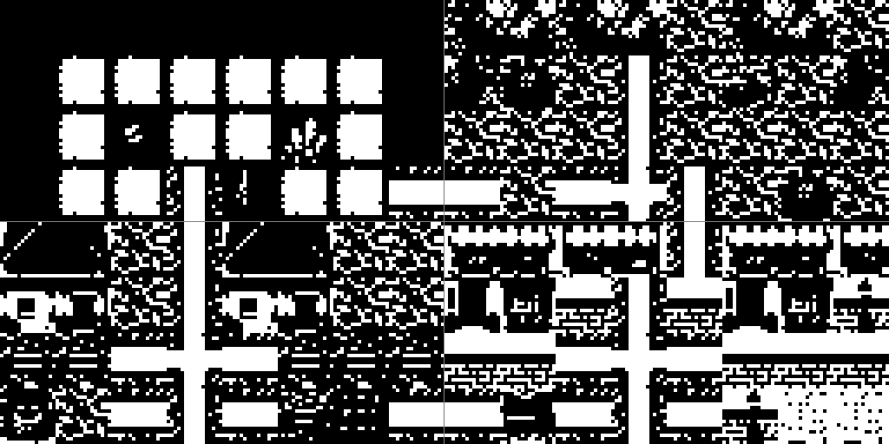
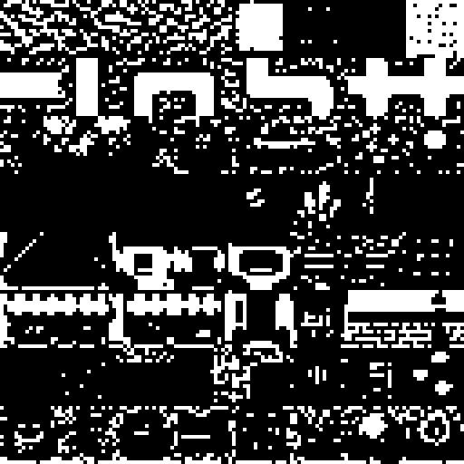
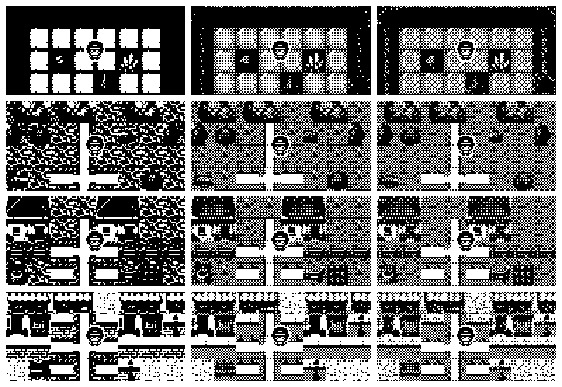
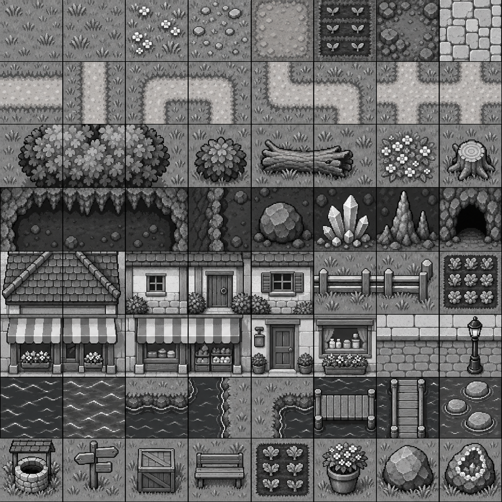

Three independent art directions, one shared 8×8 tile-ID layout, three monochrome texture treatments and four areas assembled from that kit. Every area view is an exact 128×64 framebuffer: 8×4 grid cells, with the current 16×16 player at runtime position (56,24).
The art in this round was generated as fresh tileset sheets. Existing spikes helped identify the grid and device constraints; their artwork was not used as a visual reference.
Each row uses the same map tile IDs in all three columns. Select a direction to switch the atlas source and a dithering treatment to change its atlas preview and Tiled export. The image files remain native 128×64; they are displayed at 2× nearest-neighbor for inspection.
The cave, forest, rural town and city are joined as a 16×8 tile map (256×128 pixels). The thin center guides split it into four 128×64 camera windows. The map uses the same atlas and tile IDs as the viewport studies; the downloadable Tiled map has no baked viewport guides or player sprite.

Layered storybook · clean threshold · atlas enlarged 4× with nearest-neighbor scaling.

Each style and dither treatment has its own matching atlas and Tiled tileset. Tile IDs are stable across all versions.
Tile families · eight shared rows organize the world kit.
| IDs | Family |
|---|---|
| 0–7 | Base ground and terrain |
| 8–15 | Paths, corners and junctions |
| 16–23 | Trees, shrubs and forest props |
| 24–31 | Cave walls, floor and minerals |
| 32–39 | Cottage pieces, fences and gardens |
| 40–47 | Shops, street edges and lighting |
| 48–55 | Water, banks and crossings |
| 56–63 | Shared landmarks and props |
Tile names and IDs are in the manifest and in each Tiled tileset. These are exploratory pieces for world assembly, not installed game graphics.
Rows are cave, forest, rural town and city; columns are clean, light and heavy dithering. Each is a nearest-neighbor 2× enlargement of its native framebuffer.

These independent 8×8 source sheets establish three treatments from the same family layout. Guides are cropped while slicing; the stored source remains unchanged.
